Warhammer Rule AssistantQuick Reliable Answers
The ultimate tool for Warhammer players who want to spend their time fighting, not searching rulebooks.
Ask. Answer. Play.
-
01
Ask
Any rule question, in plain language
-
02
Answer
Short reply first, details when you need them
-
03
Play
Continue your battle, no time wasted
Built for the table
Less time searching rules. More time playing. Fewer disputes, more confidence when it matters.
- New players Learn through answers, not PDFs every turn
- Casual groups Settle debates quickly and keep the mood friendly
- Competitive players Check edge cases with source-backed answers
How it works
-
1
Pick a system
Age of Sigmar or Warhammer 40,000
-
2
Ask a question
Core rules, faction interactions, edge cases
-
3
Read the answer
Short summary, then a detailed explanation
-
4
Check the source
Official reference and reliability score